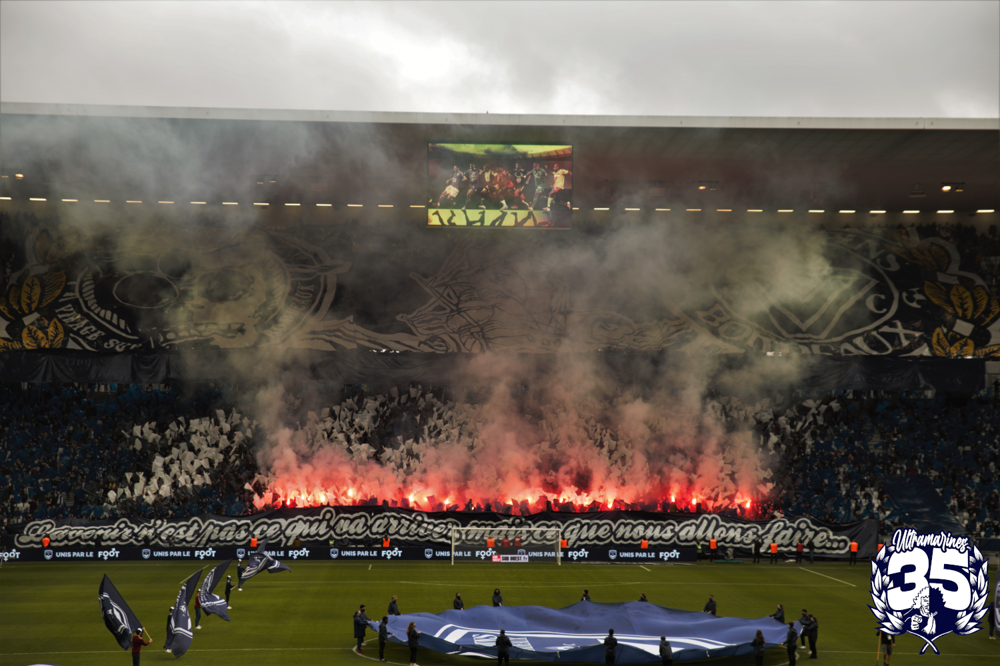
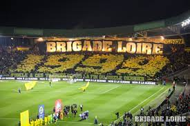

Ultramarines : Bordeaux-Monaco

Brigade Loire : Nantes-Lille

Virage Sud Marseille : OM-Nice

Magic Fans : Asse-Troyes

Bad Gones : Lyon-Porto

Merlus Ultras : Lorient-Strasbourg

Malherbe Normandy Kop : Le Havre-Caen